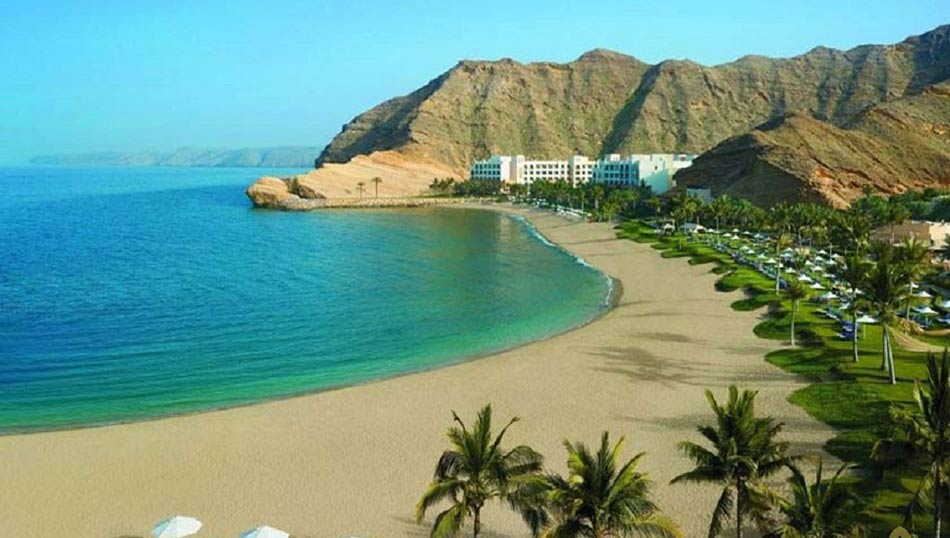

Gwadar Port & Hammerhead
Pakistan's deep-sea gateway on the Arabian Sea and the iconic Hammerhead headland of Gwadar.
Pakistan's deep-sea gateway on the Arabian Sea and the iconic Hammerhead headland of Gwadar.
Gwadar Port is a warm-water deep-sea seaport on the Arabian Sea in Balochistan, situated on Gwadar Bay near the mouth of the Gulf of Oman. With its natural depth and strategic location, the port serves as a key maritime hub for regional trade and connectivity.
Just northwest of the port lies Hammerhead—a striking, hammer-shaped headland formed by wind and water erosion. The sandstone/mudstone promontory offers sweeping views of the Arabian Sea, the crescent-shaped coastline, and the city of Gwadar.
Gwadar Port features deep-draft berths, a turning basin, cargo yards, and access roads connecting to the Makran Coastal Highway. Its position near major sea lanes supports transit trade and maritime services.
